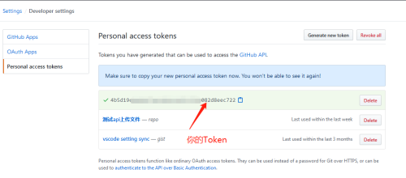
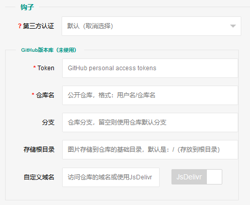

钩子¶
或者称为扩展、插件吧，本质就是增强某个功能点的代码段，当然是用Python实现，
分为内置和第三方。 实现这一功能的核心在于钩子管理器：HookManager类（libs/hook.py），感兴趣可以 看下源码，是提取 Flask-PluginKit 部分加上其他东西实现的。
备注
当前内容适用于管理员和钩子开发者，需要对Python Flask、HTML有一定了解。
1. 内置钩子¶
所属本地，不允许删除，只能禁用、启用，目前有两个内置，up2local和token， 分别是将上传的图片保存到本地、API可以使用Token（LinkToken）认证。
Added in version 1.1.0: 内置增加了4个，将我之前写的常用的对象存储内置集成了，不过默认是禁用的。
- up2local
将上传的图片保存到本地（sapic源码目录src/static/upload），默认保存图片 的钩子。
- up2upyun
将上传的图片保存到又拍云的 USS云存储服务
使用方法：启用钩子，刷新控制台页面，在 站点管理-网站设置 底部的 钩子配置区域配置又拍云相关信息， 如加速域名、Bucket、用户名及密码等， 并在上传区域中 选择存储后端为up2upyun 即可，后续图片上传时将会 保存到又拍云。
- up2qiniu
将上传的图片保存到七牛云的 KODO对象存储服务
使用方法：参考又拍云的使用即可，配置加速域名、Bucket、AK及SK等（在七牛云 个人中心-密钥管理可以拿到AK、SK）。
- up2oss
将上传的图片保存到阿里云 OSS对象存储
使用方法：同上，配置要求的AK及SK可以在阿里云管理控制台-AccessKey密钥管理 中拿到；允许使用RAM子用户的密钥（允许编程访问），要求拥有OSS管理权限即可。
自 1.8.0 版本弃用: 请使用 sapicd/up2oss 代替！
- up2cos
用来将上传的图片保存到腾讯云 COS对象存储
使用方法：同上，配置加速域名、Bucket、SecretID及Key等（在腾讯云控制台-访问管理-访问密钥-API密钥管理中可以拿到SecretId、SecretKey；允许使用子用户的密钥，要求拥有COS管理权限即可）。
自 1.8.0 版本弃用: 请使用 sapicd/up2cos 代替！
Added in version 1.5.0.
- up2github
用来将上传的图片保存到 GitHub 公开仓库，您需要拥有github账号，并获取personal access token。
定位到：https://github.com/settings/tokens/new，勾选repo权限，生成后会有 下图所示token，只会出现这一次，保存好！

之后[可选]创建一个public仓库，或使用已有仓库。
接下来是开启GitHub钩子并配置，上传的图片会存到“仓库/存储根目录”下，允许 多级子目录和 自定义域名 （默认是raw.githubusercontent.com），当然， 不用域名而使用JsDelivr也是极好的，直接全网CDN（+免费图床套餐）！

小技巧
JsDelivr能直接把github仓库CDN化，所以很多静态资源放github，用jsdelivr 访问，实现CDN效果。
不过注意勾选上使用JsDelivr，由于CDN缓存效果，删除时，图片一段时间 仍然可以访问。
如果使用自定义域名（请参考官方文档设置），其需要github构建，所以 刚上传的图片也不能立刻访问，需要等构建成功。
Added in version 1.7.0.
- sendmail
通过3种方式发送邮件
Added in version 1.16.0.
- pic2webp
将JPG/PNG图片转为webp格式
2. 第三方钩子¶
非内置的钩子所属均为第三方，我发布的第三方已经整理在 Awesome for sapic ， 其内容（管理员）可以在安装第三方钩子时，通过类似“应用商店”的形式进行显示， 并在线安装！
Awesome for sapic 收藏的第三方经过审核，可放心食用。
第三方是通过pip、easy_install等安装到本地环境中的模块、包。
使用第三方钩子需要先在服务器安装模块，然后管理员在控制台-站点管理-钩子扩展 添加第三方钩子 模块名称 。
上面我发布的第三方基本都已经发布到pypi，所以可以使用pip直接安装：
$ pip install up2smms up2superbed
钩子在更新版本后，管理员可以在web中通过“安装第三方包”的功能进行升级式安装 或手动安装，完成后，程序会自动更新钩子模块，实现新功能。
3. 钩子开发¶
3.1 应用中钩子扩展点¶
运行在服务端程序代码中用来扩展某些功能的地方，为Python函数，下面是扩展点 名称及说明。
以下扩展点传递的参数和要求返回的格式、内容可能各不相同，大概分为：
接口型
通常用在RESTful API环境中，要求返回dict格式，至少包含code字段。
code为0表示处理成功，非0表示失败，此处应该有msg字段表示错误消息。
在扩展点内用葡萄表示：🍇
路由型
通常当作视图函数就行
在扩展点内用樱桃表示：🍒
随缘型
可能没有传参、不要求返回，也没有代表水果，随缘就好~
before_request¶
即在flask的before_request钩子函数内运行的方法，无传参（return无效果）。
此方法内，你可以使用
flask.g获取一些定义：
g.rcredis连接实例
g.cfg站点配置信息（dict，允许使用属性的方式引用）
g.signin && g.userinfo前者是布尔值，True表示已经登录； 后者是用户信息（dict，不经过解析的用户信息）
after_request¶
即在flask的after_request钩子函数内运行的方法，传递response位置参数，无需return
例如：
def after_request(res): res.headers.add("Access-Control-Allow-Headers", "Authorization")
upimg_save 🍇¶
api上传在保存图片时使用的钩子，传递参数filename、stream、upload_path， 分别是：文件名、二进制数据、上传路径。
接口型，返回一个字典对象，code非0表示上传失败，msg为错误信息；code=0表示上传成功， 此时需要设置src字段表示图片地址，还建议有一个basedir字段表示图片存储到对应存储服务的 最终所在路径，成功时所有返回的字段都会存储到系统中（即下面的save_result）。
另外，钩子中还应该有个upimg_delete方法用以删除图片[可选]，传递参数sha、 upload_path、filename、basedir、save_result，分别是：图片唯一id、上传路径、 文件名、钩子计算的图片保存到存储服务的基础路径、upimg_save返回结果。
upimg_stream_processor 🍇¶
上传图片的处理钩子，传递参数stream、suffix，分别是：图片的二进制、后缀（ 比如.png），第三方可以处理并返回新的stream。
适用场景：图片添加水印、裁剪等等。
如果返回新的替换原图二进制，要求返回格式：
dict(code=0, data=dict(stream="新的图片二进制内容", suffix="可选，指定新后缀"))注意：钩子可以替换原图，多个钩子的处理会累加（处理优先级是按照钩子名排序）。
upimg_stream_interceptor 🍇¶
上传图片的处理钩子，传递参数stream、suffix，分别是：图片的二进制、后缀（ 比如.png），第三方可以处理并确定是否继续，和上一个区别是，此扩展点 遇错返回，即处理的钩子任何一个返回了处理失败的结果，上传则中止， 并返回错误信息给用户。
适用场景：检测到图片涉及敏感信息时拒绝上传。
profile_update¶
用户成功修改个人资料时触发此钩子方法，传递关键字参数nickname、avatar
第三方认证相关的几个钩子¶
site_auth 布尔值，True定义了自身是个第三方认证的钩子，必须
login_handler 🍒登录页面处理器，控制了/login路由，默认返回程序自身登录页
login_api 🍇登录接口处理器，必须
logout_handler 🍒登出动作处理器，必须
管理员控制台钩子配置处有一个第三方认证，钩子只有设置了
site_auth = True才被认为是一个第三方认证钩子。这一块至少需要实现三个函数：login_api、logout_handler、before_request， 分别处理登录登出动作以及每次请求登录态判断，少一个，程序都会进入默认处理， 那这个钩子恐怕就没什么意义了。
login_handler是登录页面，其通过ajax登录，传递username、password、remember三个 参数，基本可以不用管，当然，如果你的登录参数复杂，可以定义此函数返回自定义 登录页面，要求返回值要是Flask.Response的子类，示例：
from flask import make_response site_auth = True def login_handler(): return make_response("""<form> <input name=other-user></input> <input name=encrypted-pass></input> <button>登录</button></form> """)login_api是登录动作处理器，默认登录页面是ajax提交给接口，验证用户名密码， 通过后设置cookie登录态。
必须要自定义此方法，程序默认会传递可变参数：username, password, set_state, max_age, is_secure， 当然你也可以不接收，转而使用request另行处理（如果自定义了login_handler）， 另外要求返回值要是Flask.Response的子类，而且要设置登录态， 比如cookie、session（如果采用默认登录页面，返回类型要求是JSON）。
from flask import request, jsonify def login_api(*default_args): user = request.form.get("other-user") passwd = request.form.get("encrypted-pass") return jsonify(code=0, msg="ok")logout_handler是登出动作处理器，配合login_api的登录态设置方法，比如是cookie 要设置清除cookie，是session要删除键值。
before_request是flask的一种钩子，每次请求都先经过它“预处理”一下再交给路由 函数，自定义认证需要通过它设置
g.siginin = True/False设定登录成功与否 和g.userinfo登录用户的信息，必须字段username，其他字段is_admin、avatar、nickname等。def before_request(): if check_with_cookie_or_session_login_ok: g.siginin = True g.userinfo = dict( username='xxx', is_admin=0, avatar='', nickname='', )小技巧
可以结合profile_update方法更新一些字段。另外可以参考现有案例 picbed-ssoclient 。
警告
第三方认证隐藏很大风险，比如，其username可以直接读取同名已注册用户所有 数据（然而实际上可能不是同一人），is_admin字段更是直接拥有了管理员 权限，比如绕过注册审核，等等。
所以，如果不是相当 信任 ，请不要使用此类钩子扩展！
3.2 模板中钩子扩展点¶
与上面不同，这些只作用在模板内，用来在页面某位置插入HTML代码。
使用方法是，在钩子内，用 intpl_NAME 赋值（intpl_是固定前缀，NAME是
扩展点名称），可以定义成字符串或者函数。
如果是函数，那么会先执行函数（结果必须是字符串）， 其结果再判断是模板文件还是HTML代码。
如果以 .html, .htm, .xhtml 结尾，则认为是模板文件，否则是
HTML模板代码，前者以render_template渲染，后者以render_template_string渲染，
也就是说可以使用flask在模板内的东西，url_for、g、request等。
目前模板中可用的NAME如下：
sitesetting¶
管理员控制台站点设置下与上传设置之间，表单内容。
intpl_sitesetting = ''' <div class="layui-form-item"> <label class="layui-form-label">提示</label> <div class="layui-input-block"> <input>表单样式参考layui</input> </div> </div> '''
hooksetting¶
管理员控制台钩子设置下，表单内容，格式参考上面。
支持复选框、开关样式（勾选值为1，否则0）
emailsetting¶
邮件配置，表单内容，格式参考上面
adminscript¶
管理员控制台脚本区域，要求内容是 <script> JS脚本
profile¶
用户个人资料下，表单内容，格式参考上面。
usersetting¶
用户设置的站点个性化设置下面，表单内容，格式参考上面。
before_usersetting¶
用户设置的站点个性化设置上面，表单内容，格式参考上面。
userscript¶
用户中心脚本区域，要求内容是包含 <script> 的JS脚本内容
login_area¶
位于登录页面的密码框与记住我复选框中间，格式是表单元素，比如input、select等
小技巧
由于前端页面使用 Layui 框架，所以模板内表单 您需要对其格式有所了解。
3.3 API¶
程序有一个API接口是专门给钩子准备的，端点是 api.ep ，
url是 /api/extendpoint ，仅支持POST方法，它从URL查询参数获取两个值：
Object：即钩子模块名；Action：钩子方法
钩子管理器定位到Object执行（无传参）并返回Action函数结果，找不到返回404
假设一个钩子helloworld，定义如下：
from flask import jsonify
def welcome():
return jsonify(hello="world")
def just_dict():
return dict(hello="world")
上述钩子加入sapic，请求如下：
$ curl -XPOST "http://your-sapic-url/api/extendpoint?Object=helloworld&Action=welcome"
{"hello": "world"}
小技巧
Action钩子方法内部可以直接使用g、request等，
以及 utils.web.apilogin_required() 等。
3.4 路由¶
面向前端页面专门给钩子扩展用的，端点是 front.ep, url是
/extendpoint/<hook_name>/[route_name], 仅支持GET访问
hook_name：即钩子名称，比如up2oss、picbed-smtp；
route_name：路由名称，可选。
定位到 hook_name 直接执行 route 函数（无传参），按照其结果有两种判断：
- 返回的是字符串
此时route_name无效，无论是啥，最终访问URL返回的都是字符串这个结果
示例，钩子名test：
from flask import render_template_string as render def route(): return render('<b>hello world!</b>')
访问：
$ curl http://your-sapic-url/extendpoint/test/ <b>hello world!</b> $ curl http://your-sapic-url/extendpoint/test/xxxx <b>hello world!</b>
- 返回的字典对象
此时route_name有效，会从字典中查找route_name对应的值， 注意： 如果值可以回调并且不是
flask.wrappers.Response实例， 那么会当作函数执行并直接返回执行结果，否则直接返回。示例，钩子名test：
from flask import render_template_string as render, jsonify def a_func(): #: your code return abort(403) def route(): return dict( s=render('<b>hello world!</b>'), j=jsonify(text='hello world'), f=a_func )
访问：
$ curl http://your-sapic-url/extendpoint/test/ !404 $ curl http://your-sapic-url/extendpoint/test/s <b>hello world!</b> $ curl http://your-sapic-url/extendpoint/test/j {"text": "hello world"} $ curl http://your-sapic-url/extendpoint/test/f !403
小技巧
route方法内部可以直接使用g、request等，
以及 utils.web.login_required() 等。
构建路由可用url_for：
from flask import url_for
url_for("front.ep", hook_name="test", route_name="xxx")
3.5 静态文件¶
如果你的扩展比较复杂，定义成了一个包，里面有templates、static目录，那么 如何从模板中访问扩展内的静态文件呢？
这就用到了 libs.hook.HookManager.emit_assets() 方法，可以在模板中直接
调用它构建静态文件URI。
说明¶
扩展中的静态文件
your_hook/ ├── __init__.py ├── static │ ├── css │ │ └── style.css │ ├── hello.png │ └── js │ └── demo.js └── templates └── demo.html在模板中访问静态文件
钩子管理器给app附加了一条路由可以访问扩展内静态文件：assets，构建如下：
url_for("assets", hook_name="your_hook", filename="css/style.css")
不过这稍微有点长，不过好在已经在模板中注册了一个函数，使用 emit_assets 更方便：
emit_assets("your_hook", "css/style.css")
小技巧
以.css和.js结尾的文件会自动解析成引入（link、script）， 可以通过设置 _raw=True 要求不处理。
另外，如果需要构建文件的全路径（域名），通过设置 _external=True 即可
有个短名称es可以代替emit_assets，哈哈，不用记太多词。
示例¶
模板中这么写HTML：
<!DOCTYPE html>
<html>
<head>
{{ emit_assets('your_hook','css/style.css') }}
</head>
<body>
<div class="image">
<img src="{{ emit_assets('your_hook', 'hello.png') }}">
</div>
<div class="showJsPath">
<b>{{ emit_assets('your_hook', 'js/demo.js', _raw=True) }}</b>
</div>
{{ emit_assets("your_hook", filename="js/demo.js") }}
</body>
</html>
页面上查看源码是这样：
<!DOCTYPE html>
<html>
<head>
<link rel="stylesheet" href="/assets/your_hook/css/style.css">
</head>
<body>
<div class="image">
<img src="/assets/your_hook/hello.png">
</div>
<div class="showJsPath">
<b>/assets/your_hook/js/demo.js</b>
</div>
<script type="text/javascript" src="/assets/your_hook/js/demo.js"></script>
</body>
</html>
如何编写钩子？¶
可参考内置钩子和已有第三方。
使用Python编写，兼容2.7和3.6+
基本上需要一些对Flask框架的了解
实际编写中，就是一个模块，复杂一点可以定义成包。 编写时需要定义元数据(必须包含version和author)，参照函数运行环境， 灵活使用Flask的“全局”变量，之后就可以开搞了。
__version__ = '符合语义化2.0规范的版本号' __author__ = '作者 <邮箱>' __hookname__ = '直接定义钩子名称（昵称），否则默认是文件模块名' __state__ = 'enabled/disabled' # 状态：启用(默认)/禁用 __description__ = '描述' __catalog__ = '分类' __appversion__ = '要求的应用版本号' #: Your Code Here.
hookname是钩子名，用来定位钩子，一般可以设置为pypi上发布的包名。 比如picbed-smtp，这是pypi上包名称，可用pip安装它，但模块名是 picbed_smtp（python模块导入时，减号是非法的）。
如果不设置hookname，那么钩子名会默认解析为picbed_smtp，除非你的钩子没有 特殊符号（例如up2oss），否则建议添加hookname！
目前会检测版本号是否符合 语义化规范 ，不合规范则 不会加载并给出警告。
可以参照 Flask-PluginKit如何开发第三方插件 ， 除了第一步开发细节，其他流程差不多。
备注
着重说一下appversion（可选），用于第三方定义允许加载此 钩子的程序版本，其格式是：
<op>version，留空则表示允许所有版本。<op>是操作符（可选），允许使用
< <= > >= == !=这六种符号，分别表示： 小于、小于等于、大于、大于等于、等于、不等于，默认是 >=version表示picbed(sapic)图床程序的版本号。
另外，允许用半角逗号分组，表示匹配所有分组才允许加载。
举例说明（__appversion__ = ↓）：
1.8.0
说明此钩子要求的图床程序版本最低是1.8.0，支持之后版本，不满足 要求则程序不会加载此钩子。
ps：没有操作符，默认是大于等于(>=)
>1.8.0
要求sapic版本1.8.0之后（不包含1.8.0），如1.8.1、1.9.0
<1.8.0
跟上一条相反，1.8.0之前（不包含1.8.0），如1.7.99999、1.6
1.8.0,<=1.9.0
要求sapic图床版本最低是1.8.0，最高是1.9.0
>1.8.0,<1.9.0,!=1.8.2
要求图床版本大于1.8.0小于1.9.0且不等于1.8.2